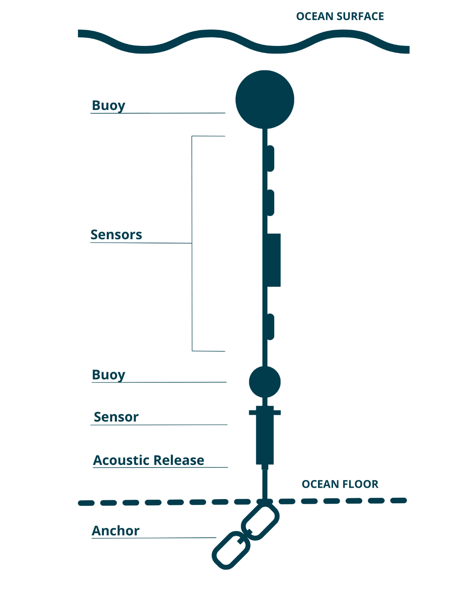
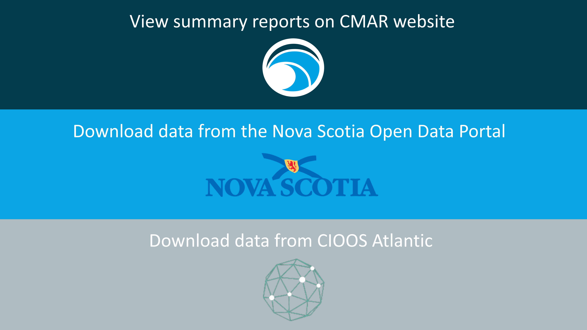

Water Quality
Through the Water Quality branch of the Coastal Monitoring Program, CMAR collects high resolution temperature, dissolved oxygen, and salinity data.
Data Collection
Water Quality data is collected using “sensor strings”. Each string is attached to the seafloor by an anchor and suspended by a sub-surface buoy, with sensors attached at various depths (Figure). Most strings deployed since 2018 are attached to the anchor by an acoustic receiver with a release mechanism. The receiver also logs detections of tagged animals including great white sharks, sturgeon, and tuna for the Ocean Tracking Network.
Characteristics of the station location (e.g., depth, bottom type, and currents) and stakeholder needs dictate the string configuration (e.g., anchor weight, and number/type of sensors). Sensor strings are generally deployed 200 m to 1000 m from shore, in depths up to 75 m. Historically, strings were deployed with only temperature sensors, but in more recent years at least one dissolved oxygen sensor is included (typically at 5 m). At the request of industry, salinity sensors are also included at stations near proposed and existing shellfish aquaculture leases.
Calibration & Validation
Text to come
Data Access
Coastal Monitoring Program Water Quality Data can be accessed from several platforms. Summary reports are available on the CMAR Website. Full datasets can be downloaded from the Nova Scotia Open Data Portal and the CIOOS Atlantic.
